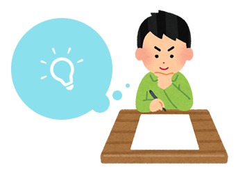

1駅目
「SNS」は私の中の日常の一部
あなたは電車に乗っている時、何をしていますか。
オンライン（web）を使って過ごしていませんか。
インターネット調査のマクロミルは、通勤・通学の電車内での過ごし方に関するアンケートを実施し、
結果を6月27日に発表した。
スマホやタブレットを操作する
車内広告を見る
ぼーっとする
外の景色を見る
眠る
最も多い過ごし方は、「スマホやタブレットを操作する」でダントツの84.1％で8割を超えた。
２位は「車内広告を見る」46.4％、３位は「ぼーっとする」46.3％、４位は「外の景色を見る」40.2％、５位は「眠る」40.0％と続いた。
通勤・通学電車で8割強がスマホ・タブレットを操作していることが分かりました。
私も電車内では常にオンラインで過ごしていたので、10日間オフラインで過ごしてみました。
結果、オフライン中は無意識にアンケートの２位から５位を全てやっていました。
２位の「車内広告を見る」では、新しい広告に気づいたり、映像広告の進歩に驚きました。
オンライン時には、映像広告はあまり見ていなかったことに気づきました。
３位の「ぼーっとする」では、ぼーっとしながら音楽を聴き、曲にイラストや映像をつけるならどのようなものにするか考えていました。
４位の「外の景色を見る」ではいつも通っているはずなのに、景色の中で発見することがあり、いつもスマートフォンしか見ていなかったことを実感しました。
他にもオフラインにしてから目の痛みがなくなり、スマートフォンを使うことでかなり目を酷使していたことも実感しました。また、スマートフォンを見なくなったことで背筋が伸びたり、周りをよく見るようになりました。
しかし暇に感じることも多かったです。
2駅目
「SNS」は私の日常の一部
オフライン中暇になると、無意識に何度もSNSを開いてしまい自分が怖くなりました。
先ほどのアンケートでは8割以上の人が「スマホやタブレットを操作する」と回答していましたが、では具体的に何をしているのでしょうか。
メールやメッセージのチェックや送信
ニュースをチェックする
SNSを閲覧、投稿する
アンケートの結果、1位は「メールやメッセージのチェックや送信」85％、
2位は「ニュースをチェックする」65％、
3位は「SNSを閲覧、投稿する」55％でした。
「SNSを閲覧、投稿する」は第3位。
私は電車内でよく「SNS」を使っています。
「SNS」は私の日常の一部で、見る事が当たり前になっていました。
そこでなぜ「SNS」をこんなにも見たくなってしまうのか、私なりに考えてみました。
●他の人が今何をしているのかが知りたい
●憂鬱な朝の気分を共有したい
●気づいたことを発信したい
●新しい情報が欲しい
●ニュースが見たい
●退屈を凌ぎたい
考えた結果、私は暇なことが嫌いなのだと気づきました。
しかし、家ではオフラインでいる事が多いです。
3駅目
家でのオフラインの過ごし方
スーモの「一人暮らし大学生は、自宅でどんなふうに過ごしているの？」というアンケート調査を実施しました。
1位は、「テレビを見る」60.4％。
2位は、「携帯でメールやゲームをする」34.5％。
3位は、「音楽を聴く」が３位32.1%。
圧倒的な1位はやっぱり「テレビを見る」60.4％。
＂若者のテレビ離れ”なんていわれているけれど、
なんだかんだ見てしまうのがテレビ。
そして「音楽を聴く」が３位。
テレビと同様、”若者の音楽離れ”なんていわれているものの、
実際には音楽を聴き、楽しんでいる人は多いようです。
4位は、「ぼーっとする」22.4％。
5位は、「パソコンでメールやゲームをする」22.0%。
6位は、「テレビ・パソコンでゲームをする」21.5％。
ゲームやメールを使い、オンラインで過ごしている人もいます。
7位は、「マンガを読む」12.6%、10位は、「DVDを見る」11.2％
好きなマンガやDVDに触れて過ごしているのが分かります。
8位は、「掃除・洗濯をする」12.0％、9位は、「料理をする」11.9％。
今までは趣味などをあげる人が多かったですが、しっかり家事をする人もいます。
少数派の意見では
「筋トレやヨガ、ストレッチなど室内でできる運動」3.1％や、「ネイルや美容に関すること」1.9％。
ほかにも、「寝る」、「勉強」、「学校の課題をする」などもありました。
私も家では1位のテレビを見ることや、7位や10位の漫画や雑誌を見たり、
DVD鑑賞をよく行っています。
また実家暮らしのため家族と会話をする事も多く、
オンラインでいるのは調べたい事があった時や課題制作時、
芸能人のブログを閲覧する時くらいです。
そのため、私の場合は情報が欲しい時にしか、オンラインを使わないのだと気付きました。
通学中は長い空白の時間が続くのでオンラインを使うのだと思います。
4駅目
オフラインで絵を描く
オフラインで絵を描くことを何度かやってみました。
電車内で試した時は、小さい紙を用意して描きました。
電車内で描いた絵に色をつけたのがこれです。

描いている際はとても眠かったので、こんな絵になりました。
調べられないので、アイディアがなかなか浮かばず悩みました。
なので上の画像のような想像上のゾウやリボンなど、私の知識の中にあるものだけで描きました。
自分らしさのある絵になったと思います。
家でもオフラインで絵を描くこと試してみました。家では割とすらすら描けました。
電車内のように人に見られるような環境では無かったからでしょうか。
しかし、家でも描いているうちに調べたいことが出てきました。
電車内でも家でも絵を描くと、調べたいことが出てきます。
そこで調べたくなったことをまとめてみました。
●アイディア探し
●人物のポーズ
●キャラクターの顔
●おしゃれな服装
●食べ物の正確な形
あれオフラインで絵を描くことって・・・
5駅目
わからない▶︎調べる
突然ですが、あなたは授業中に落書きした事ありますか？
パラパラ漫画をノートの端っこに描いたり、授業とは関係の無い絵を描いたり。
授業中の落書きは調べずに想像で自由に描いていく。
それはオフラインで絵を描く時と同じなんです。
絵が自分の中で完結しています。
オフラインで絵を描くことは、自分ならではのものを生み出すには丁度いい。
想像力や発想力が豊かになり、自分らしい絵を描けると思います。

「ほとんどすべての人間は、もうこれ以上アイデアを考えるのは
不可能だというところまで行きつき、そこでやる気をなくしてしまう。
勝負はそこからだというのに。」
トーマスエジソンの名言にもあるように、アイディア出しを諦めないことは大切だと思います。
私はオンライン時、アイディアをインターネットで探していました。
オンラインで調べながら絵を描いていれば、たくさんの情報が手に入り、
アイディアはインターネットに頼れる時代になりました。
しかし、オフラインでも見つかるアイディアは確かにありました。
最初はでなくても、周りの風景や人、音楽や、感じたことからでも
いろいろなアイディアが浮かぶはずです。
もちろんオンラインで調べて、ポーズや食べ物を参考にするのもいいと思います。
ですが、自分の中にあるアイディアだけで絵を描くことも試してください。
思いがけないアイディアが浮かぶはずです。
絵だけでなくアイディアを考えたり、文章を考える時などには
オフラインだと、いろんな発想が生まれると思います。
電車でインターネットばかりに触れている時には感じたことがありませんでした。
オフラインの良さに私は気づけた気がします。